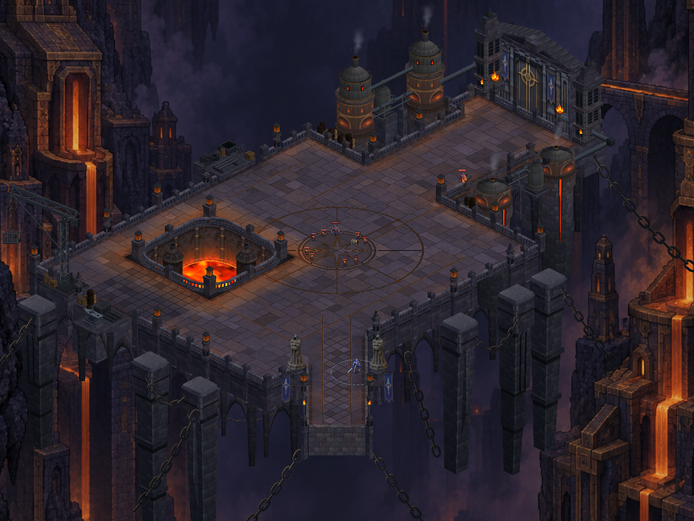
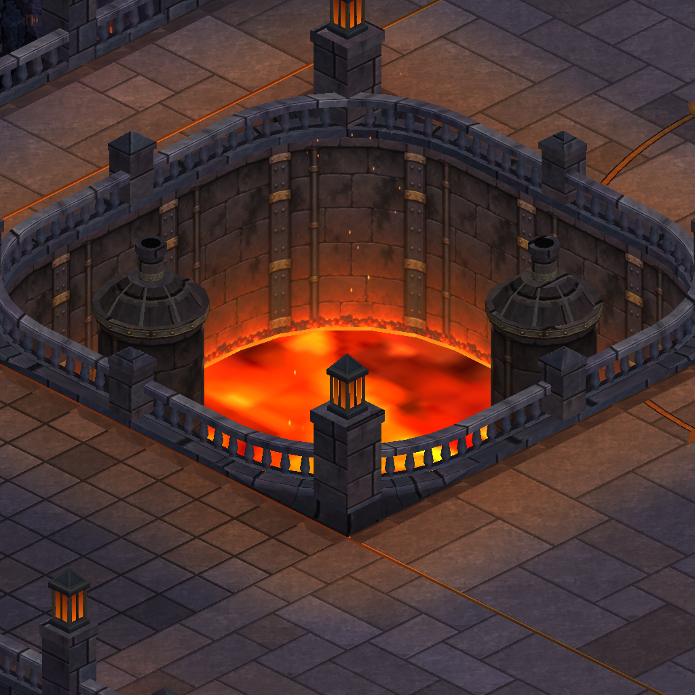
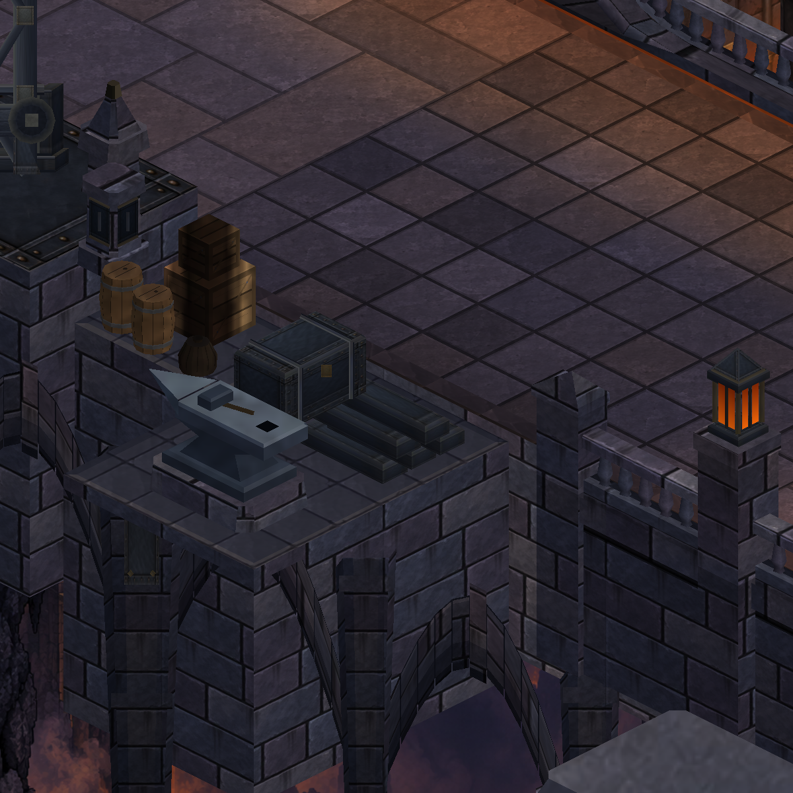
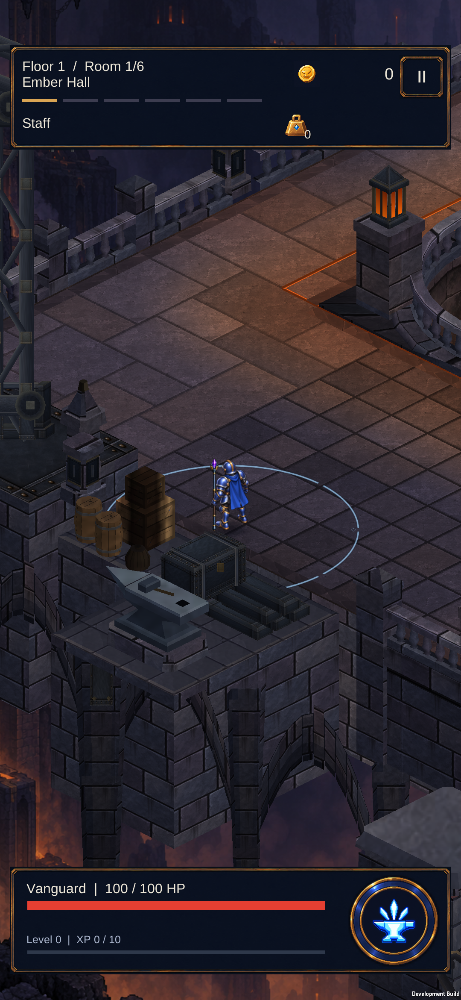
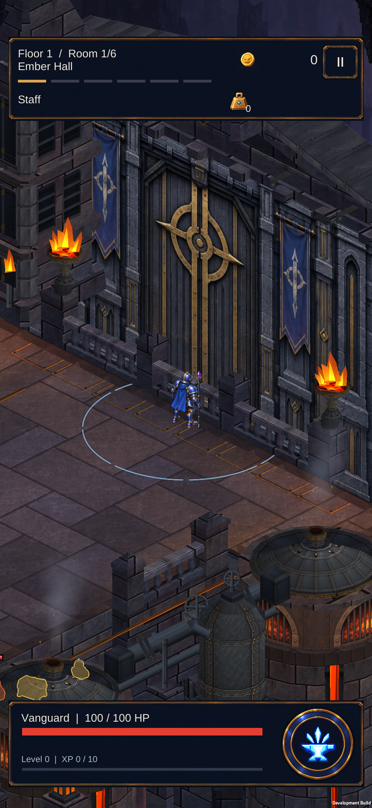

Reference-led foundry layout
Actual Unity geometry, 8 October 2026. A broader western court, a 12 × 12 furnace opening and a distinct 10-unit gate causeway. Existing artwork relocated onto the new footprint.

New layout — same overview camera as the previous build
Larger rounded-square opening; lowered molten surface and extended inner walls
Existing anvil, stock and loading shelf moved with the west perimeter Direction reference — concept illustration, not a screenshot or finished fidelity claim
Direction reference — concept illustration, not a screenshot or finished fidelity claim
S23 — walked to the relocated west workshop
S23 — reached the gate through the narrowed causewayThis establishes the playable template. The concept's bevelled exterior outline, raised gate terrace, finer masonry scale and denser workshop composition remain unfinished. The current walkable surface stays on one gameplay plane.